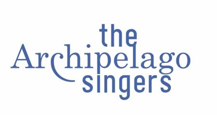
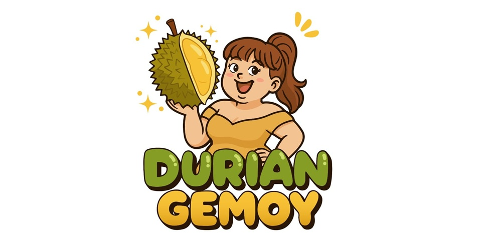
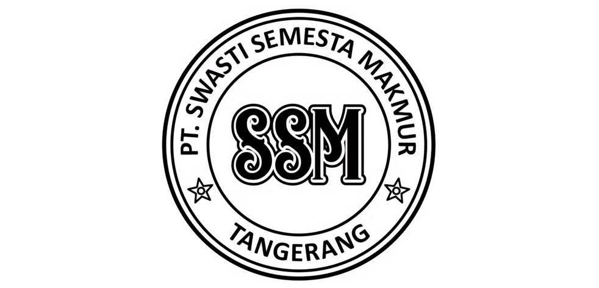

Puji dan syukur kami panjatkan kepada Tuhan Yang Maha Esa atas kasih dan penyertaan-Nya sehingga The Resonare Deo Choir Annual Concert dengan tema "Harmony in Diversity: When Voices Become Home" dapat terselenggara dengan baik.
Konser ini merupakan sebuah langkah awal yang sangat berarti bagi perjalanan The Resonare Deo Choir (TRDC). Lebih dari sekadar sebuah pertunjukan, konser ini adalah hasil dari proses panjang yang dipenuhi latihan, kerja sama, serta dedikasi dari para anggota paduan suara, pelatih, dan seluruh tim yang terlibat.
Panitia melihat secara langsung bagaimana semangat, disiplin, dan kebersamaan tumbuh selama proses persiapan konser ini. Setiap nada yang akan kita dengarkan malam ini merupakan hasil dari kerja keras, komitmen, dan kecintaan para anggota terhadap musik paduan suara.
"Harmoni tercipta bukan karena kesamaan, tetapi karena keberagaman yang saling melengkapi."
Tema "Harmony in Diversity" mengajak kita semua untuk melihat bahwa perbedaan warna suara, karakter, dan latar belakang justru menjadi kekuatan yang menghadirkan keindahan dalam satu kesatuan musikal.
Kami juga merasa sangat terhormat atas kehadiran paduan suara profesional The Archipelago Singers sebagai bintang tamu dalam konser ini. Kehadiran mereka menjadi inspirasi bagi kami semua, khususnya bagi para anggota TRDC dalam terus berkembang dan berkarya.
Akhir kata, saya mengucapkan terima kasih yang sebesar-besarnya kepada seluruh pihak yang telah mendukung terselenggaranya konser ini: Tim Produksi, pelatih, panitia, sponsor, orang tua, serta semua pihak yang telah memberikan dukungan dan kepercayaan. Semoga konser ini dapat menjadi awal dari perjalanan panjang TRDC dalam menghadirkan karya-karya musikal yang menginspirasi.
Selamat menikmati konser ini. Terima kasih.
The Resonare Deo Choir (TRDC) adalah paduan suara remaja Katolik yang beranggotakan remaja berusia 11–18 tahun dan berdomisili di Tangerang. TRDC didirikan pada Oktober 2025 sebagai wadah pembinaan generasi muda yang memiliki minat dan bakat dalam seni tarik suara, khususnya dalam bidang paduan suara.
Nama Resonare Deo berasal dari bahasa Latin yang berarti "bergema bagi Tuhan", yang mencerminkan semangat pelayanan melalui musik paduan suara. Melalui harmoni suara dan kebersamaan dalam bermusik, TRDC berupaya menghadirkan pujian yang indah serta membangun karakter para anggotanya dalam semangat iman, kedisiplinan, dan kerja sama.
Dalam proses pembinaannya, TRDC tidak hanya berfokus pada pengembangan teknik vokal, tetapi juga pada pembentukan kualitas musikal dan kekompakan tim. Untuk mencapai standar artistik yang semakin baik, TRDC secara rutin menyelenggarakan coaching clinic dengan menghadirkan pelatih berpengalaman, di antaranya Leonardus Joseph, Roni Sugiarto, Ega O. Azarya, dan Leo Dimas.

The Archipelago Singers adalah paduan suara independen Indonesia yang telah meraih berbagai penghargaan internasional, didirikan pada tahun 2008 oleh sekelompok pecinta musik paduan suara yang memiliki dedikasi tinggi terhadap pengembangan seni vokal.
Nama Archipelago mencerminkan Indonesia sebagai negara kepulauan terbesar di dunia, sekaligus melambangkan semangat "Persatuan dalam Keberagaman". Melalui musik paduan suara, The Archipelago Singers berupaya menghadirkan keindahan harmoni yang merefleksikan keberagaman budaya Indonesia kepada masyarakat dunia.
Kelompok ini secara konsisten meraih berbagai penghargaan dalam kompetisi paduan suara internasional bergengsi serta telah menyelenggarakan lebih dari tiga puluh konser di Indonesia maupun di berbagai negara. Saat ini berada di bawah arahan konduktor Ega O. Azarya.

The Archipelago Singers
Memulai pendidikan musik klasik dengan belajar piano pada Ibu Romey Mandala, Ega O. Azarya kemudian belajar vokal pada Ivan Yohan, Dody Soetanto dan Ibu Dorcas Soenaryo, serta memperdalam teknik vokalnya melalui masterclass oleh Prof. Rudolf Piernay (Jerman).
Sebagai solis bariton-bas, Ega tampil bersama Orkes Concordia dan Jakarta City Philharmonic Orchestra. Pada tahun 2016 ia mengikuti International Choir Conducting Masterclass di Debrecen, Hungaria di bawah bimbingan Peter Broadbent dan Mate Szabo Sipos.
Sebagai konduktor The Archipelago Singers, Ega telah membawa paduan suara ini meraih Grand Prix di Busan (2019), First Prize di Spanyol (2014), Bulgaria (2016), serta penghargaan internasional di Italia, Filipina, dan Slovenia. Pada Juli 2025, ia membawa PSM Unpar menjadi juara Grand Prix di Gorizia, Italia.
| Waktu | Kegiatan |
|---|---|
| 16.30 – 16.55 | Registrasi / Open Gate |
| 17.00 – 17.10 | Pembukaan Acara (MC) Doa · Sambutan |
| 17.10 – 17.55 |
Perform The Resonare Deo Choir Selalu Ada di Nadimu — arr. Andreas Baladika Thankful — arr. John Leavitt O Magnum Mysterium — arr. Kevin Memley Twinkle Twinkle Little Star — arr. Daniel Elder The Lion Sleep Tonight — arr. Kirby Shaw Cantate Domino — arr. Josu Elberdin Festival Sanctus — arr. John Leavitt |
| 17.55 – 18.25 | — Rehat — |
| 18.25 – 18.55 |
Perform The Archipelago Singers Leonardo Dreams of His Flying Machine — Eric Whitacre Imagine — arr. Nilo Alcala Soleram — arr. Josu Elberdin Negeri di Awan — arr. Yosan Cahyadi Laskar Pelangi — arr. Ily Matthew Maniano Circle of Life — arr. Anna Tabita Abeleda |
| 18.55 – 19.00 | All Singers Why We Sing — dinyanyikan bersama |
| 19.00 – 19.15 | Penutupan Penyampaian buket bunga · Doa |
Pianis: Alenzo Leksana







Fiftin Fatmasari
Filisitas Kristina S
Maria Yudhitama Eka
Agustina Endang
Dapur LS 17 Citra Raya
Yulita Rintyasrini
RR. Yulita Riswidaja
Handoyo
Siregar Setiawan Manalu
Ngatini
FX Suhartono
Rita Kurniasih
Margaretha Setiawan
Heryanto Oemar
Veronika Suvarna
Kuat Setia Budi
Eduardus Ary
Yosefina Rumengan
Deasy Liliyanty
Yuliani Rahmat
Vitalis Jebarus
Harinowo Cantata Divina GS
Agnes Bebasari
Caroline Budyerlin
Catharina Ratnawati
Irene Mariani Tjan
Jeni Widjaja
Josy Suryanti
Martina Nelly
Meilinda Hardjali
Mia Tantina Iskandar
Suryono Hidayat
PT. Mayora
PT. Indofood
Pelatih & Dirigen: Yanuar Prasetio
Kostum: Muji Rahayu, Agatha Ferry Setyaningsih, Sarmauli Ros Sumbayak, Nelly Ober Maristella Tondang
Konsumsi: Brigita Sri Suryani, Fransisca Deciana, Fretry LM, Glory Maidy, Yohana Vero, Bonor Simamora, Nova Laksmawati, Dian Puji Astuti
Wakil Ketua: Andreas Sihono
Sekretaris: Maria Astrid Ohoiwutun
Bendahara: Maria Niken Kurniawati
Sie Acara: Sesilia Novyanti, Bergitta Redawati, Nopi
Sie Dana Usaha: Meilany P. H, Netty A, Dhian Oscarani
Sie Tiketing: Elisabeth Zee, Wilibold Gulabertus Affrial
Sie Humas: Florentina Nancy, Emiliana Ardian Farida
Sie Publikasi: Leonardus Simamora
Sie Dokumentasi: Koko, Lufti
Sie Perlengkapan: Hendy K, Willy, Lian, Mario, Ale
Sie Penerima Tamu: Senna, Yani, Ica, Priska
Sie Lighting: Yannuar Prasetio, Antonius Wisnu
Sie Keamanan: Yohanes Purwanto, Nazarius Triyono, Totok, Martinus Iswandi
Sie Konsumsi: Fransiska D.